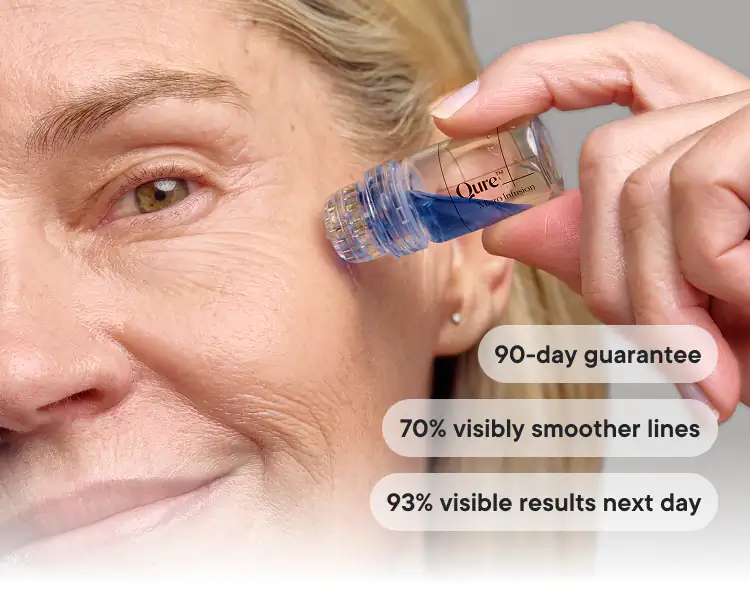
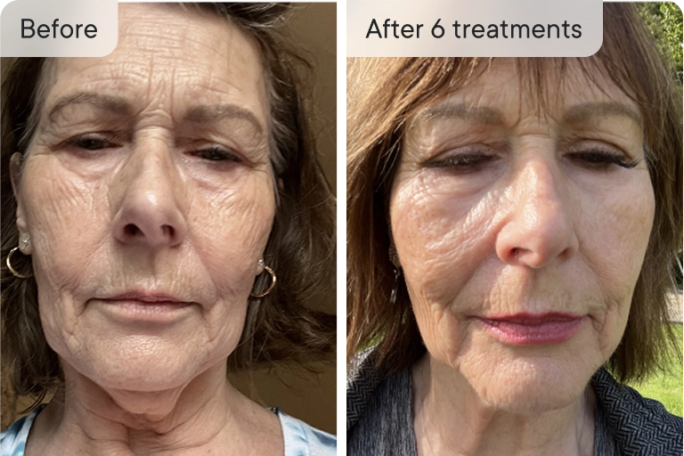
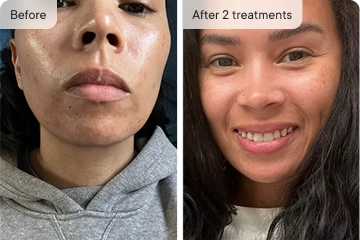
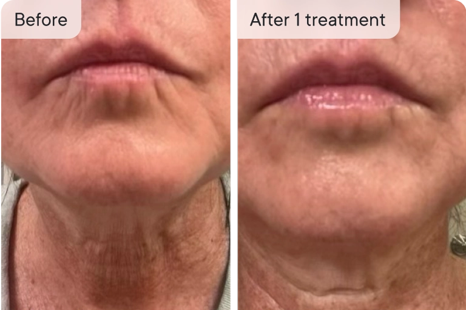
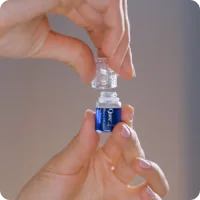

50+ dermatologists • 4.8/5 500k+ customers
Fine lines & dark spots look smoother. No injections.
24K gold-plated microneedles. Qure's Micro-Infusion System delivers active serums deeper than traditional creams can reach.


50+ dermatologists • 4.8/5 500k+ customers
24K gold-plated microneedles. Qure's Micro-Infusion System delivers active serums deeper than traditional creams can reach.

Dr. Shah
Board Certified Dermatologist
“This treatment is an at-home option for those who want to avoid the hassle or cost of going to the office.”

Dr. Maxfield
Board Certified Dermatologist
“Qure do studies on this, taking a look at how effective it is, so you can have confidence it’s going to help what you’re doing for your skincare routine.”

Dr. Tripathi
Double Board Certified Facial Plastic Surgeon
“I love that Qure Skincare products go beyond just topical treatments, helping to maintain the results of in-office procedures.”

Dr. Stephens
Board Certified Dermatologist
“The Qure Micro-Infusion stamping device offers a safe and effective solution for a variety of different skin conditions.”
The patent-pending system uses tiny, almost painless, microneedles penetrate beyond the skin’s surface increasing serum absorption and delivering powerful active ingredients exactly where they’re needed!
How Qure refreshes your skin in 3 easy steps:
Patented 24k gold needles create micro-channels.
Clinically formulated serum flows directly into the dermis, not on top of it.
Helps skin look refreshed and visibly renewed.

 Kim L.
Kim L.
Smooth, plump, and refresh your skin’s appearance from within. Qure’s Micro-Infusion helps improve the look of collagen-depleted skin, restores hydration, and supports the skin’s natural barrier — all in one step.

 Monika J.
Monika J.
Gentle microneedling device boosts cell turnover and delivers brightening ingredients deep into the skin to visibly smooth, clarify, and even out tone.
 Ellie V.
Ellie V.
Restore skin glow by infusing hydrating, brightening ingredients deep into the skin for a fresh, radiant finish that lasts.

"I like using this between my in-office treatments and it's easy to use, even for beginners."
Dr. Alekandra Brown
Board-Certified Dermatologist

"After just a few uses my wrinkles look less visible and my skin brighter and smoother."
Dr. Lindsey Zubritsky
Board-Certified Dermatologist

"You can get a clinical treatment at home safely and conveniently... and it's particularly beneficial for those with melanin-rich skin."
Dr. Alexis Stephens
Internal Medicine Doctor

"With Qure's Micro-Infusion System - consistency is key."
Dr. Prem Tripati
Facial Plastic Surgeon
 Kim L.
Kim L.
“I just turned 57 years. My skin was extremely dry and while using this product my skin RETURNED to LIFE! I am so impressed with it! My Coworkers ask me what I use in my skin.. and I tell them. Product easy to use and the needles are better that using a pen for microneedling. This is an amazing product that you will not regret in purchasing it. I really see the change in my skin. Outstanding job QURE!”
 Mona P.
Mona P.
“I personally think my products absorbed better, my skin looks a bit brighter and that larger acne scar on my right cheek has started to fade after just TWO treatments!”
 Andrea G.
Andrea G.
“Still a newbie but so far so great! I have dermarolled for more than a decade -still do with .25 at least one a week. I’ve avoided getting a pen because there’s so much involved- but the Qure system is just awesome. So easy and user friendly and my skin loves the serum! Doing my third treatment Saturday and will definitely be re-ordering 🤗
 Jessica K.
Jessica K.
"I have been using the mask & microneedling for 6 weeks & am truly impressed with the results. I have noticed a dramatic reduction in redness, an improvement in my dark spots, scars & overall skin tone & firmness, and a smoothing of fine lines & wrinkles."
 Ela O.
Ela O.
“Shocked at the results after just one treatment! I’m not one to usually leave reviews... but I was shocked at how my skin looked the morning after my first treatment! Texture was soooo much smoother, my skin looked clear, glowy and healthy. The system was so easy to use and I can’t wait until my next treatment.”

Shelly S.
“I have used the Qure Micro- Infusion System for 3 monthly treatments. The results are clearer, plumper and firmer skin. With further treatments I am looking forward to looking better and better.”

Chelsea J.
"Amazing results. I am just in shock at how great my skin is looking. This stuff has been amazing for hyperpigmentation and also some hormonal cystic acne. I will be continuing to support this business because it has brought the skin I know back. I was at my wits end with a hormonal breakout and bad hyperpigmentation."
 Akina M.
Akina M.
“I used three time so far. I can see the results from first time I used. I love this product but only thing is it’s take time to apply till used all serum per application. I tried many different way to press to my skin so the serum come out more but then a lot of time not.”
 Jess
Jess
“I committed to the 3 month saver bundle and after 6 treatments (2 weeks apart) I’m SO happy with the results!!! My pores are smaller and I have mainly noticed a difference in my skin texture. My skin goes a little red straight after the treatment but that quickly goes away. It’s a little uncomfortable when I do it on my forehead but it’s fine everywhere else. Totally worth it!!!”

“After the first use of EGF, my skin was plumper, more hydrated and skin tone improved radically, literally the next day. Love this product, will definitely be purchasing more as its really helped smooth out the fine lines also”

Jennifer N.
“I am really stunned by how well this product works. I have had professional micro-needling and I wanted the benefits without the downtime. I did my treatment, went to bed and woke up the next morning and was ready to go. My skin looks better than it has in years.”


Cleanse your face thoroughly and spritz the Dermal Mist to refresh and prepare your skin further.

Twist off the cap of the serum vial and screw on the sterile needle head.

Remove the cap and stamp gently across your face using light pressure, working section-by-section.
All orders are one-time purchases. No extra charges, and no hidden fees.

Helps reveal a smoother-looking, more radiant complexion. Formulated to help improve the appearance of dark spots and uneven tone for skin that looks refreshed and luminous.
Skin Concerns: Ideal for skin that appears uneven in tone or texture and shows visible dark spots or post-blemish marks.
Odycea Onsen-Sui Thermal Spring Water (France): Making up 50% of the formula, this mineral-rich thermal spring water is known for its soothing, hydrating, and balancing properties that help support skin comfort and barrier strength.
Epidermal Growth Factor (EGF): A science-backed ingredient known to support the look of smoother, hydrated, and more refreshed skin. Helps visibly reduce the look of fine lines and uneven tone.
Niacinamide:A multi-benefit vitamin known to help improve the look of uneven tone, minimize visible pores, and support smoother-looking skin.
Tranexamic Acid:A brightening ingredient that helps visibly improve the look of dark spots, uneven tone, and dullness.
All ingredients:
Odycea Onsen-Sui (Thermal water), Propanediol, Glycerin, Tranexamic Acid, Niacinamide,
Panthenol, Chrysanthellum Indicum Extract, Ethylhexylglycerin, Tripeptide-1, Xanthan Gum, Allantoin, SH-Oligopeptide-1.
Delivers lasting hydration to leave skin looking plumper, smoother, and refreshed. Helps reduce the look of fine lines and wrinkles while supporting visibly calm, balanced, and supple-feeling skin.
Skin Concerns: Ideal for skin that appears dry, dull, or shows visible signs of aging such as fine lines, uneven tone, and temporary redness.
Odycea Onsen-Sui Thermal Spring Water (France): Making up 50% of the formula, this mineral-rich thermal spring water is the foundation of our serum. Naturally sourced from the Onsen-Sui springs in France, it’s known for its soothing, hydrating, and balancing properties that help support skin comfort, barrier strength, and ingredient performance. As the main base of our micro-infusion system, it gives the formula its refreshing and lightweight feel — gentle enough even for sensitive skin.
Beta Glucan: A powerful hydrator that helps the skin feel supple, moisturized, and visibly smoother.
GHK-Cu (Copper Peptide):A peptide complex known to help improve the appearance of firmness and smoothness for youthful-looking skin. Gives the serum its signature blue hue.
Sodium Hyaluronate:A powerful hydrator that helps the skin feel
supple, moisturized, and visibly smoother.
All ingredients:
Odycea Onsen-Sui (Thermal water), Propanediol, Glycerin, Panthenol, Niacinamide, Myrothamnus Flabellifolia Leaf/Stem Extract, Water, Butylene Glycol, Hydroxyacetophenone, Copper Tripeptide-1, Beta-Glucan, Chrysanthellum Indicum Extract, Ethylhexylglycerin, Allantoin, Sodium Hyaluronate, Xanthan Gum.
Designed to support smoother, brighter-looking skin with balanced hydration.
Helps soften the look of fine lines while improving the appearance of dark spots and uneven tone, leaving skin looking refreshed, plumper, and more luminous.
Dark Spots Serum:
Odycea Onsen-Sui (Thermal water), Propanediol, Glycerin, Tranexamic Acid, Niacinamide, Panthenol, Chrysanthellum Indicum Extract, Ethylhexylglycerin, Tripeptide-1, Xanthan Gum, Allantoin, SH-Oligopeptide-1.
Wrinkles Serum:
Odycea Onsen-Sui (Thermal water), Propanediol, Glycerin, Panthenol, Niacinamide, Myrothamnus Flabellifolia Leaf/Stem Extract, Water, Butylene Glycol, Hydroxyacetophenone, Copper Tripeptide-1, Beta-Glucan, Chrysanthellum Indicum Extract, Ethylhexylglycerin, Allantoin, Sodium Hyaluronate, Xanthan Gum.
Select Your Supply:
Select A Payment Option:


Auto-ships · Cancel anytime · No commitment
Designed to support smoother, brighter-looking skin with balanced hydration.
Helps soften the look of fine lines while improving the appearance of dark spots and uneven tone, leaving skin looking refreshed, plumper, and more luminous.
Dark Spots Serum:
Odycea Onsen-Sui (Thermal water), Propanediol, Glycerin, Tranexamic Acid, Niacinamide, Panthenol, Chrysanthellum Indicum Extract, Ethylhexylglycerin, Tripeptide-1, Xanthan Gum, Allantoin, SH-Oligopeptide-1.
Wrinkles Serum:
Odycea Onsen-Sui (Thermal water), Propanediol, Glycerin, Panthenol, Niacinamide, Myrothamnus Flabellifolia Leaf/Stem Extract, Water, Butylene Glycol, Hydroxyacetophenone, Copper Tripeptide-1, Beta-Glucan, Chrysanthellum Indicum Extract, Ethylhexylglycerin, Allantoin, Sodium Hyaluronate, Xanthan Gum.
The stamping action of the Micro-Infusion device creates tiny micro-channels on the surface of the skin, helping to enhance the absorption of active ingredients and visibly refresh the complexion.
The serum you choose during your Micro-Infusion treatment will deliver visible results over time. Very fine needles help apply concentrated ingredients exactly where they’re needed to target specific skin concerns with precision.
You can switch up your treatments or even mix the two serums together!
Visible benefits of Micro-Infusion may include:
Micro-Infusion treatment is an effective skin booster treatment, and you’ll notice a radiance boost, smaller pores, more hydrated and overall a healthy fresh complexion in the next day or two.
The more treatments you perform the greater skin benefits over time you’ll receive! This quick and easy home facial is perfect to perform a day or two before a big event, when you need to look to boost your skin’s complexion, fast.
Don’t forget to keep up with your everyday skincare routine to boost the effectiveness of your Micro-Infusion results and keep skin glowing long-term.
You get to experience minimal discomfort and maximum results with Qure's Micro-Infusion System.
Although the needles themselves are actually longer than most at-home needling systems (making it more effective), the ultra-fine needles are thinner than a human hair, so that means you’ll feel minimal to no pain during treatment.
During the initial stages of treatment, you may experience a slight sensation or prickling feeling as the needles make contact with the skin but you’ll quickly get used to the feeling quickly.
We recommend a Micro-Infusion treatment once every 2 weeks for the best results.
We recommend doing the treatment at night before bed. Avoid being in the sun and using makeup for 24 hours after the treatment. For more information on post treatment care, visit our safety guide.
Yes, you can use Micro-Infusion around the eye area to help smooth crow’s feet. Just ensure to apply a very gentle pressure and only do one pass. Monitor your skin accordingly as everyone’s skin is different!
Performing Micro-Infusion on the neck can help improve the appearance of fine lines, and rejuvenate skin. It can target issues such as neck creases, horizontal lines, and age-related skin concerns to help enhance the overall texture, tone, and youthfulness of the skin.
No - only use the provided Qure serum with your Micro-Infusion Device.
Please keep in mind that not all serums are suitable for Micro-Infusion. Some may cause irritation and should be avoided! Our potent serum ampoules are specifically developed for our Micro-Infusion System, with gentle, fragrance-free formulas designed for deep delivery and low risk of sensitivity.
Micro-Infusion focuses on improving the skin’s appearance by creating micro-channels on the skin’s surface. It does not alter or affect skin structure or function.
With Micro-Infusion, you not only enjoy the visible benefits of micro-needling, but also deliver science-backed ingredients to targeted areas with precision — helping the skin appear smoother and more radiant.
If you live in Australia, you may receive a notice from Border Force regarding tranexamic acid (TXA) in your order. Here’s what you need to know:
In Australia, TXA is classified as a Schedule 4 (prescription-only) drug only when used orally or by injection for treating melasma or other medical conditions. However, topical TXA in cosmetic formulations is permitted.
Our serums are purely for cosmetic use and do not claim to treat medical conditions. They are applied topically (not injected) and are classified as a cosmetic product rather than a prescription medicine.
Our products are compliant with Australian regulations. Facial serums containing up to 3% TXA for cosmetic purposes are not classified as prescription-only medicines and do not require inclusion in the Australian Register of Therapeutic Goods (ARTG).
If Border Force requires clarification, you can provide the information above to confirm that the product complies with Australian regulations. If further details are needed, they can refer to the Therapeutic Goods Administration (TGA) guidelines on cosmetic formulations.
If you need further assistance, feel free to contact our support team—we’re happy to help!